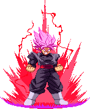
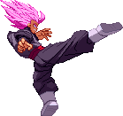

Activate Superior Mode
Foolish mortals! Daring to face a god!!
The gloves are figuratively off, and Black is now taking you seriously, his newfound Saiyan biology
relishing the challenge! While the mode is active, Black receives quite a few changes
- Black glows with overwhelming energy!
- Blacks overall meter gain is reduced
- Pushback on Blacks normals are altered
- All of Blacks Normals gain additional frames of hitstun. Sounds small, but opens up a lot of possibilties, and makes him a potent threat!
- He gains access to a new "Superior Gauge" that he can utilise in various ways. It always starts fully stocked
- Dependant on how much Superior Gauge he has, Black deals additional damage
- Access to new moves, including multiple specials and even a Super serving as a mode exit!
- Altered Super properties (KMH launches higher, Rapid Heel Barrage deals more hits, etc)
- Black glows with overwhelming energy!
- Blacks overall meter gain is reduced
- Pushback on Blacks normals are altered
- All of Blacks Normals gain additional frames of hitstun. Sounds small, but opens up a lot of possibilties, and makes him a potent threat!
- He gains access to a new "Superior Gauge" that he can utilise in various ways. It always starts fully stocked
- Dependant on how much Superior Gauge he has, Black deals additional damage
- Access to new moves, including multiple specials and even a Super serving as a mode exit!
- Altered Super properties (KMH launches higher, Rapid Heel Barrage deals more hits, etc)


Backfist Chain
Black is beginning to truly make Gokus power his own!
after a close Medium Kick, Black backfists the opponent similar to Goku, with
a healthy amount of frame advantage to boot!



Hurricane Heel
Following the slash, Black can cancel in to a spinning kick upon making contact
with the opponent. This kicks packs a punch, and sends the enemy flying! You can also teleport after the
opponent by pressing Up/Up and any direction. Can also be done outside of Emo as a dash attack with Heavy Kick.